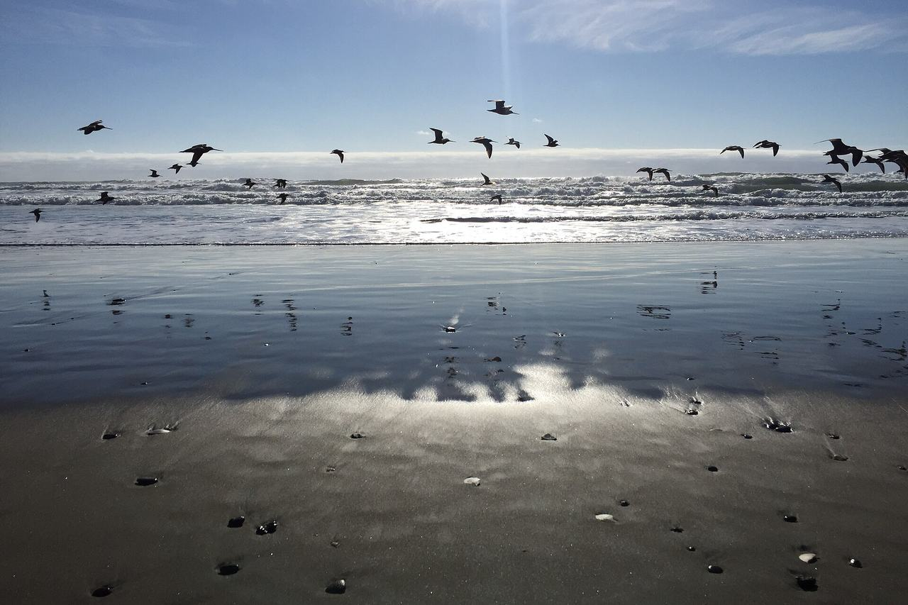

Sunset / Parkside
The city's Sunset/Parkside analysis neighborhood — the avenues laid out across the dunes between Golden Gate Park and Sloat Boulevard. Coverage begins with the parcels the Office of the Assessor-Recorder photographed for tax assessment between 1946 and 1959.

Map
Named buildings and landmarks
-
1

-
2
-
3

-
4

-
5

-
6
-
7
-
8
-
9
-
10
-
11
-
12
Also here: Parkside Adventist Christian Church, Parkside Garage, The Lodge, Pinehurst Lodge, James Lick Supermarket, United Irish Cultural Center, Ortega Branch Library, Joseph Keith Residence.
Streets documented so far
- 19th Avenue
4 buildings, built 1916–1921. - 20th Avenue
1 building, built 1926. - 21st Avenue
1 building, built 1922. - 22nd Avenue
5 buildings, built 1950. - 23rd Avenue
1 building, built 1924. - 24th Avenue
2 buildings, built 1917–1925. - 25th Avenue
1 building, built 1913. - 26th Avenue
1 building, built 1913. - 27th Avenue
2 buildings, built 1939–1988. - 28th Avenue
1 building, built 1906. - 29th Avenue
11 buildings, built 1900–1921. - 30th Avenue
9 buildings, built 1906–1928. - 31st Avenue
1 building, built 1977. - 32nd Avenue
1 building, built 1950. - 33rd Avenue
1 building, built 1942. - 34th Avenue
3 buildings, built 1933–1949; 2 in the Picturesque Period Revival Tracts Historic District. - 35th Avenue
34 buildings, built 1932–1950; 31 in the Picturesque Period Revival Tracts Historic District. - 36th Avenue
23 buildings, built 1932; 23 in the Picturesque Period Revival Tracts Historic District. - 37th Avenue
6 buildings, built 1916–1950. - 38th Avenue
5 buildings, built 1922–1950. - 39th Avenue
5 buildings, built 1942–1950. - 40th Avenue
1 building, built 1950. - 41st Avenue
5 buildings, built 1940–1950. - 42nd Avenue
1 building, built 1950. - 43rd Avenue
4 buildings, built 1950. - 44th Avenue
2 buildings, built 1946–1950. - 45th Avenue
6 buildings, built 1950. - 46th Avenue
7 buildings, built 1908–1950. - 47th Avenue
4 buildings, built 1907–1950. - 48th Avenue
6 buildings, built 1907–1950. - Crestlake Drive
2 buildings, built 1936–1937. - Cutler Avenue
1 building, built 1927. - Forest View Drive
1 building, built 1940. - Gellert Drive
1 building, built 1951. - Great Highway
2 buildings, built 1908–1946. - Huntington Drive
1 building, built 1953. - Irving Street
8 buildings, built 1925–1950. - Judah Street
12 buildings, built 1920–2008. - Kirkham Street
2 buildings, built 1933–1947; 1 in the Picturesque Period Revival Tracts Historic District. - La Playa
1 building, built 1926. - Lakeshore Drive
1 building, built 1955. - Lawton Street
2 buildings, built 1932; 2 in the Picturesque Period Revival Tracts Historic District. - Lincoln Way
1 building, built 1951. - Middlefield Drive
1 building, built 1942. - Moraga Street
3 buildings, built 1940. - Noriega Street
3 buildings, built 1932–1949. - Ortega Street
1 building, built 1943. - Quintara Street
1 building, built 1966. - Rivera Street
1 building, built 1941. - Santiago Street
2 buildings, built 1949. - Sloat Boulevard
1 building, built 1947. - Taraval Street
3 buildings, built 1924–1975. - Ulloa Street
2 buildings, built 1917–1926. - Vicente Street
1 building, built 1950. - Wawona Street
3 buildings, built 1950.
Parks and public spaces
- Carl Larsen Park
Neighborhood park or playground, 7.3 acres. - McCoppin Square
Neighborhood park or playground, 7.9 acres. - Parkside Square
Neighborhood park or playground, 8.8 acres. - Pine Lake Park
Regional park, 30.8 acres. - Rolph Nicol Playground
Neighborhood park or playground, 3.6 acres. - Sigmund Stern Recreation Grove
Regional park, 34.8 acres. - South Sunset Playground
Neighborhood park or playground, 4.1 acres. - Sunset Dunes
Parkway, 50.6 acres. - West Sunset Playground
Neighborhood park or playground, 17.8 acres.
Historic districts here
Adjacent neighborhoods
Golden Gate Park closes the avenues to the north and Ocean Beach to the west. The Inner Sunset adjoins north-east, West of Twin Peaks east beyond Portola Drive, and Lakeshore south across Sloat Boulevard.